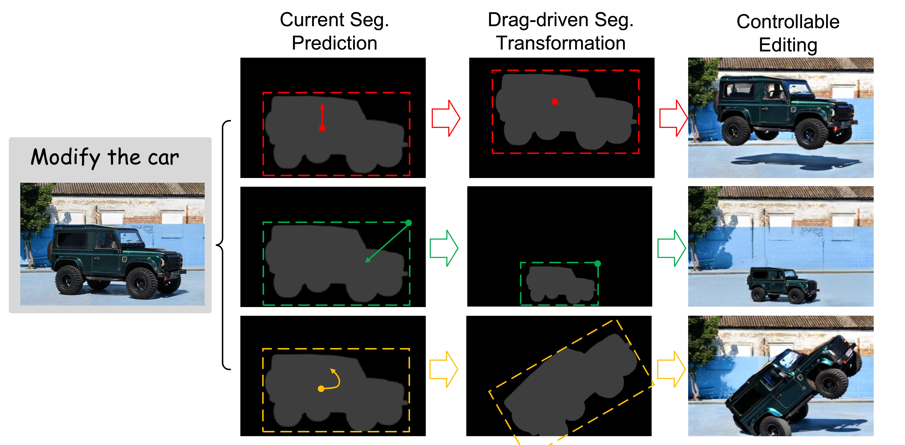

1. Multi-turn Image Editing
Qualitative comparison between our method (w/ SFT on OmniEdit) and recent baselines (HQ-Edit, UltraEdit, OmniGen, and GPT-4o (GPT Image 1)) on the proposed MSE-Bench.


2. Multi-concept Composition
Zero-shot qualitative results for multi-concept composition (without fine-tuning on downstream task-specific datasets).

3. Chain-of-Editing
Chain-of-Editing (CoE): first generating the segmentation map of the current image (i.e., grounding) or/and the next image (i.e., layout planning), and then generating the image.

Qualitative comparison between w/o CoE and w/ CoE.

4. Story Keyframe Generation

5. Drag-based Image Editing
In this setting, users first provide an editing prompt to localize the RoE. Then, drag operations are applied to perform geometric transformations (e.g., object displacement, scaling, and rotation) of the RoE. The transformed segmentation map driven by the transformation is incorporated into the context, allowing the model to generate a target image that adheres to the specified edits.
